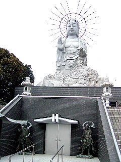

三浦大仏/神奈川県横須賀市
三浦半島の高台に海を見下ろす霊園がある。
その霊園の一画に大仏が建っている。三浦大仏である。

石像の大仏さんで高さは13.5メートル。台座とあわせると20メートル以上ある。磨崖仏等でなく切り出しの石像大仏としてはかなり立派な部類に入ると思う。石像部分は愛知県岡崎市の業者が製作している。岡崎と言えば石刻どころだ。完成は昭和58年。
構造的に独立した金属製の光背が付いているのが特徴的だ。このクラスの大仏で光背が付いているのは珍しい。しかも独立型。

台座は納骨堂的なスペースがあるようだが鍵が掛かっていて中の様子は伺い知る事が出来なかった。
入口の扉の両脇には仁王像が守りを固めている。
階段を登り大仏さんの直下に到達する。
若干大陸系の顔の造作自体は悪くない。全体的なプロポーションはあまり宜しいとはいえず、足元の雲型の細工も少し雑な気もするが顔だけはノミに魂込めました！みたいな感じ。逆に全体から顔だけが浮いている印象も拭えない。
ところで昭和50年代後半といえば日本大仏史の上ではそれまでコンクリート一辺倒だったものがその素材が徐々に変化していった時代とも言える。例えばここと同じ年に完成した奈良の壺坂寺の大観音。翌昭和59年には青銅製の昭和大仏が完成している。
これは比較的工法が楽だったコンクリート大仏からよりグレードの高い大仏を目指そうと言う大仏バブルの徴候だったのではなかろうか。この後、昭和末期から平成にかけての大仏、大観音は鋳造製とコンクリート製が半々になってくる。そんな高級大仏への移行期に一つの方向性として巨大石仏というジャンルが模索されたのではないかと思うのだが如何なモンでしょうか。
ただ、一言だけ言わせていただきたいのだが、高級感を目指して巨大石仏を造るのもいいでしょう。確かにコンクリートの大仏よりは高級感があるかも知れません。メンテも楽でしょう。でも・・・
・・・中に入れないじゃんかよお〜・・・
この大仏さんがある敷地の近くには五重塔がある。
その他、園内には様々な石像が点在している。
敷地の一番奥には巨大な手があった。
見ると手の後ろには涅槃増や地蔵、その他諸々の石像が並んでいてプチ仏教パラダイスと化している。
これは昭和63年に起きた連続幼女殺害事件の犠牲者4人の供養のための石仏だそうだ。
日本すきま漫遊記の三浦大仏の項を見ると中央の寝釈迦の後ろにはかつて看板があってムチャムチャえぐい内容だったそうだが現在は撤去されている。
冥福を祈りつつ手を合わせようとしてふと気が着いた。
「どれに手を合わせたらいいんだろう？」
供養の意志が余程強かったんだろうか。石仏が次から次へと増殖してしまい、結果としてかなり雑多な空間になりすぎてやしませんか？
大仏、五重塔、ダブルOKの印相・・・
あまりにも色々なものがあり過ぎて、下手したら先祖の供養どころじゃなくなっちゃう恐れのあるファンキーな霊園である。
2003.3.
珍寺大道場 HOME